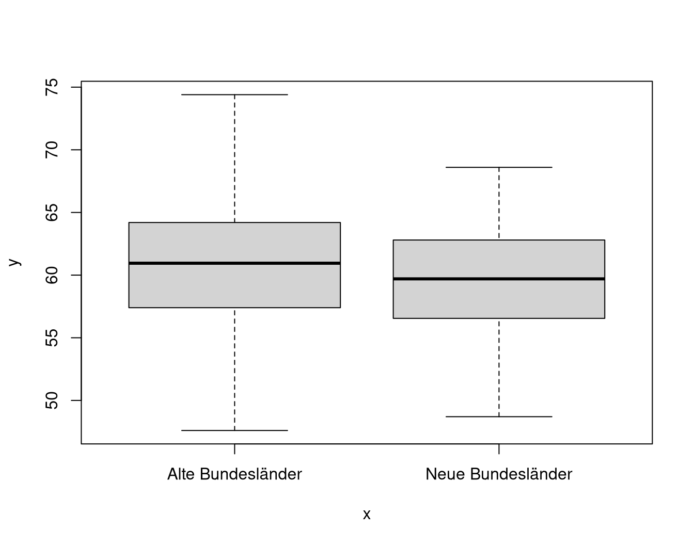
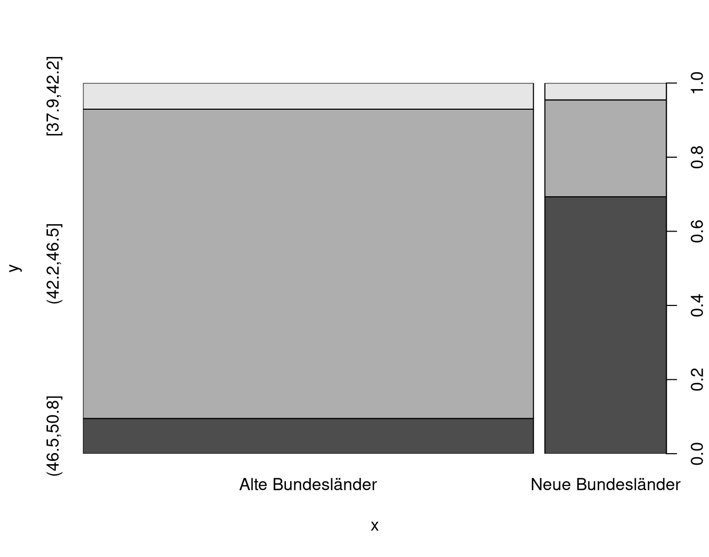
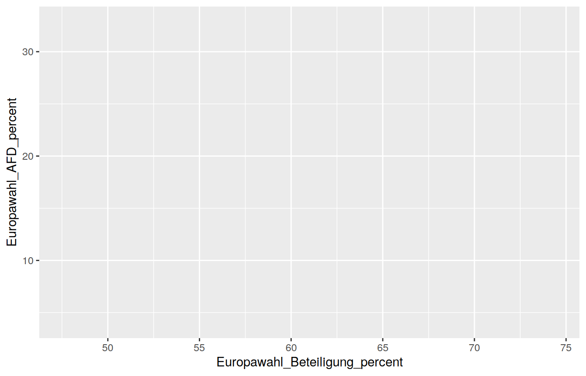
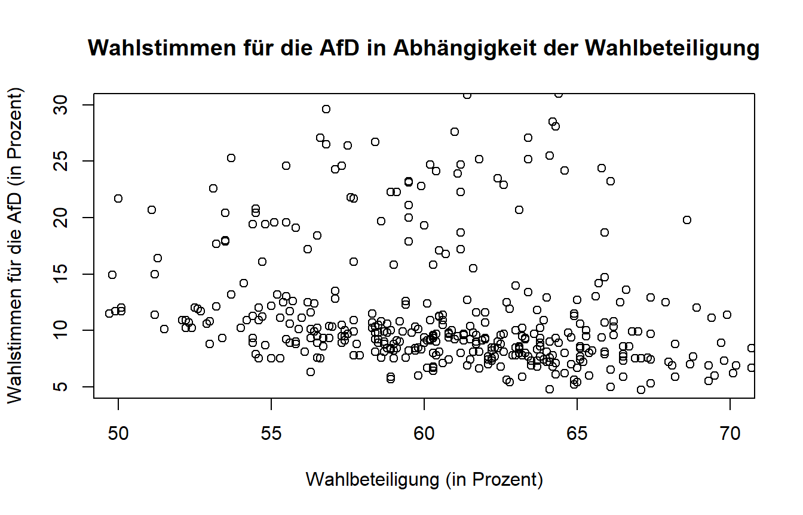

Kapitel 9 Plots und Grafiken
Eine große Stärke von R ist die Möglichkeit des Erstellens von publizierfähigen Grafiken. Wir wollen uns jetzt Schritt für Schritt anschauen, wie man in R Grafiken erzeugen kann. Als kleiner Ausblick hier schon mal ein vollständiger (und zugegebenermaßen etwas überladener) Plot:

Mit R lassen sich auf ganz unterschiedliche Weisen Grafiken erstellen. Die Art und Weise unterscheidet sich dabei hinsichtlich Komplexität und aber auch Möglichkeiten. Diese Varianten gibt es:
Mit dem Base R Grafiksystem lassen sich schnell und unkompliziert vollständige (High-Level) Grafiken erzeugen.
Mit dem Base R Grafiksystem lassen sich jedoch auch (Low-Level) Grafiken von Grund auf aufbauen und können sehr individuell gestaltet werden.
Mit verschiedenen Packages lassen sich mit vertretbarem Aufwand ansprechende und beliebig komplexe (Medium-Level) Grafiken erstellen. Hierunter zählt z.B.
ggplot2aus demtidyverse.
In dieser Sitzung werden wir uns zunächst mit Variante 1 (High-Level-Grafiken) und dann Variante 3 (Medium-Level-Grafiken) beschäftigen. Fangen wir also direkt mit einfachen Base R Plots an!
9.1 R Base Plots mit plot()
Mit der generischen Funktion plot() lassen sich die elementarsten High-Level
Grafiken erstellen. Die Art des Plots wird implizit entsprechend der Skalen der übergebenen Merkmale festgelegt. Kombinationen aus Merkmalen verschiedener Skalenniveaus führen dabei zu unterschiedlichen Darstellungen. Wem der Begriff Skalenniveau nichts sagt, findet hier eine Referenz: https://de.wikipedia.org/wiki/Skalenniveau.
Zur Vorbereitung legen wir mit dplyr::mutate() noch zwei neue Variablen an:
df_regio <- readRDS(file = "data/regio.rds") %>%
mutate(Region = if_else(condition = Regio_Code < 11000,
true = "Alte Bundesländer",
false = "Neue Bundesländer"
),
Region = as_factor(Region),
Durchschnittsalter_cat = cut_interval(Durchschnittsalter, n = 3)
)Zunächst übergeben wir nur eine metrische Variable als x.
plot(x = df_regio$Europawahl_Beteiligung_percent)
Die resultierende Darstellung ist aufgrund der metrischen Variable ein Index-Plot, wobei unser Merkmal x auf der y-Achse abgetragen ist und durch Index auf der x-Achse eine künstliche Streuung eingeführt wird. Diese Art der Darstellung ist nicht besonders informativ.
Als nächstes übergeben wir eine kategoriale/diskrete Variable:
plot(x = df_regio$Region) Das erzeugt Balkendiagramm ist schon wesentlich informativer als der vorhergehende Indexplot. Aufgetragen ist die absolute Anzahl an Fällen pro Kategorie, wobei bei unserer Variable nur zwei Ausprägungen vorkommen.
Das erzeugt Balkendiagramm ist schon wesentlich informativer als der vorhergehende Indexplot. Aufgetragen ist die absolute Anzahl an Fällen pro Kategorie, wobei bei unserer Variable nur zwei Ausprägungen vorkommen.
Nun wollen wir uns den bivariaten Plots zuwenden. Als erstes übergeben wir der Funktion plot() zwei quasi metrische Variablen.
plot(x = df_regio$Europawahl_Beteiligung_percent,
y = df_regio$Europawahl_AFD_percent)
Die daraus resultierende Darstellung ist ein Streuplot.
Interessanter wird es, wenn wir eine diskrete und eine stetige Variable kombinieren.
plot(x = df_regio$Region,
y = df_regio$Europawahl_Beteiligung_percent)
Hier wird nämlich für jede Kategorie die Verteilung der dazugehörigen metrischen Werte als Fünf-Punkte-Zusammenfassung oder auch Boxplot dargestellt. Der Strich in der Mitte der Box ist dabei der Median. Die Box an sich erstreckt sich vom 25%- zum 75%-Quantil und zeigt damit an, wo die zentralen 50% der Daten liegen (Vergleich auch: https://de.wikipedia.org/wiki/Box-Plot).
Als letztes bleibt uns noch die Kombination von zwei diskreten Variablen.
plot(x = df_regio$Region,
y = df_regio$Durchschnittsalter_cat) Bei dem erzeugten Mosaikplot entspricht die Fläche den Anteilswerten, weshalb auch an der rechten y-Achse die Prozentwert abgetragen sind. Auffällig ist hier zum Beispiel, dass in den neuen Bundesländern anteilig viel mehr Personen in die untere Durchschnittsalterkategorie fallen als bei den alten Bundesländern (rund 70% der Personen).
Plots, welche mit der Funktion plot() erstellt wurden, lassen sich mit verschiedenen Parametern anpassen.
Ein Beispiel:
plot(x = df_regio$Europawahl_Beteiligung_percent,
y = df_regio$Europawahl_AFD_percent,
main = "Wahlstimmen für die AfD in Abhängigkeit der Wahlbeteiligung",
xlab = "Wahlbeteiligung (in Prozent)",
ylab = "Wahlstimmen für die AfD (in Prozent)",
xlim = c(50,70), ylim = c(5,30))
Mit anderen Base R Funktionen kann auch ein bestimmter Typ von Plot erzwungen werden.
| Funktion | Beschreibung |
|---|---|
plot() |
generische Grafikfunktion |
hist() |
Histogramm |
boxplot() |
Box-Plot |
barplot() |
Balkendiagramm |
qqplot() |
Quantile-Quantile-Plot |
mosaicplot() |
Mosaik-Plot |
9.1.1 Speichern von Base Grafiken
Mit den Basisfunktionen in R lassen sich Grafiken in verschiedenen Formaten auf der Festplatte speichern. Es empfiehlt sich, die Grafiken als .pdf (Vektorgrafik) zu speichern. Hier ein möglicher Weg zum Speichern:
Prinzip:
Öffne eine leere PDF-Datei mit
pdf(file = "datenpfad").Erstelle dann die zu speichernde(n) Grafik(en).
Mit
dev.off()werden die Grafiken in die PDF-Datei geschrieben.
Beispiel:
# PDF-Device öffnen
pdf(file = "plots/erste_Grafik.pdf")
# Plots ausführen
plot(x = df_regio$Europawahl_Beteiligung_percent,
y = df_regio$Europawahl_AFD_percent)
plot(x = df_regio$Region,
y = df_regio$Durchschnittsalter_cat)
# PDF-Device schließen
dev.off()Nun sollte bei euch im Verzeichnis plots/ eine PDF-Datei liegen, welche die beiden ausgeführten Plots beinhaltet.
9.2 GGPlot
Soweit erstmal zu Base R Grafiken. Jetzt schauen wir uns noch das Package ggplot2 aus dem tidyverse an.

GGPlot2 ist ein mächtiges Grafik Package, um mit mittlerem
Aufwand sehr ansprechende Plots zu produzieren.
Die Logik des Aufbaus von Grafiken lehnt sich an die Ideen von Leland Wilkinson (The Grammar of Graphics) an.

Abb. 9.1: Quelle: http://r.qcbs.ca/workshop03/book-en/grammar-of-graphics-gg-basics.html
Die Idee dabei ist es, den Plot als ein Schichtung verschiedener Ebenen zu betrachten. Wenn man mit ggplot eine Grafik erstellen will, ist es hilfreich, sich dieses Bild vor Augen zu führen. Die unterste Ebene sind die Daten. Nach den Daten entscheiden wir uns mit den Aesthetics, welche Variablen auf welche Achsen abgebildet werden sollen (mapping). Die Geome bestimmen, wie der zuvor definierte Raum dargestellt werden soll. Sie geben den Daten eine “Form”, wie zum Beispiel im einfachsten Fall Punkte. Nach den Geomen folgen die Facets, welche die Möglichkeit bieten, die vorher definierte Darstellung anhand einer bestimmten “Facette” darzustellen. Beispielsweise könnten wir hier nach einem bestimmten kategorialen Merkmal stratifizieren, sodass jede Kategorie einen neuen Sub-Plot darstellt. Zuletzt können wir dann noch das gesamte Erscheinungsbild des Plots mit den “Coordinates” und “Themes” anpassen. So viel zur Theorie! Es wird sich zeigen, dass nicht alle Ebenen immer gebraucht werden.
9.2.1 Daten
Zunächst übergeben wir den ersten “Layer” der Grafik: die Daten.
Es passiert augenscheinlich noch nichts. Tatsächlich werden aber die Daten bereits hinterlegt.
ggplot(data = df_regio)
9.2.2 Wichtiger Hinweis!
Alternativ können die Daten an ggplot() auch gepiped werden:
df_regio %>%
ggplot()Diese Vorgehensweise macht euren Code noch übersichtlicher und ihr überfüllt nicht euer Global Environment.
9.2.3 Aesthetics
Im nächsten Schritt werden über das sogenannte Mapping die Aesthetics festgelegt. Hierbei wird definiert, welche Merkmale der Daten worauf projiziert werden sollen (z.B. Achsen, Farbe, Größe, etc.).
ggplot(data = df_regio,
mapping = aes(x = Europawahl_Beteiligung_percent,
y = Europawahl_AFD_percent))
9.2.4 Geome
Wie die Daten in Form der Aesthetics nun konkret dargestellt (besser: repräsentiert) werden sollen, wird über sogenannte “Geome” bestimmt. Die Geome werden mit + an die Basislayer gebunden. Damit wird deutlich, dass es sich um zusätzliche Layer handelt. Außerdem wird klar, dass die Reihenfolge der Geome relevant ist, da später hinzugefügte Geome die vorher hinzugefügten überdecken können.
ggplot(data = df_regio,
mapping = aes(x = Europawahl_Beteiligung_percent,
y = Europawahl_AFD_percent)) +
geom_point() +
geom_rug()
Ein kleiner Clou: manchmal sollen die Aesthetics (z.B. die Farbe) nur für ein bestimmtes Geom angepasst werden. Wir können dadurch eine zusätzliche Abbildungsebene (mapping) zu dem bereits definierten Geom hinzufügen, ohne dies “global” zu tun.
Beispiel: Die Farbe der Punkte soll sich nach alten und neuen Bundesländern unterscheiden, aber nur für die Punkte, nicht für die Randverteilung.
ggplot(data = df_regio,
mapping = aes(x = Europawahl_Beteiligung_percent,
y = Europawahl_AFD_percent)) +
geom_point(mapping = aes(color = Region)) +
geom_rug()
Gleichzeitig können auch statische ästhetische Eigenschaften festgelegt werden, die nicht an Daten geknüpft sind. Die Randverteilung im Plot soll lila (color) dargestellt werden und die Punkte sollen durchsichtiger (alpha) und größer (size) werden. Dazu übergeben wir den Geom geom_point() die entsprechenden Argumente:
ggplot(data = df_regio,
mapping = aes(x = Europawahl_Beteiligung_percent,
y = Europawahl_AFD_percent)) +
geom_point(mapping = aes(color = Region),
alpha = 0.6,
size = 3) +
geom_rug(color = "purple")
Es existieren eine Vielzahl von Geomen. Hier eine kleine Übersicht über die wichtigsten:
| Geom | Geometrische Objekt |
|---|---|
geom_points() |
Datenpunkte (Scatter-Plot) |
geom_jitter() |
Datenpunkte (Jitter-Plot) |
geom_bar() |
Balken |
geom_histogram() |
Histogramm |
geom_boxplot() |
Boxplot |
geom_smooth() |
Fit eines spezifizierten Zusammenhangs |
geom_rug() |
Marginale Verteilungen |
Für weitere Geome ist das Cheat Sheet eine gute Anlaufstelle.
9.2.5 Achsenbeschriftung und Themes
Es lassen sich mit der Logik der Geome auch sämtliche globale Eigenschaften der Grafik bearbeiten. Der einfachste Weg führt über das Geom labs(). Mit diesem könnt ihr Titel (title = ""), Untertitel (subtitle = ""), die Legendenüberschrift (in diesem Fall: color = "") oder die Achsenbeschriftungen (x = "", y = "") verändern.
Das allgemeine Erscheinungsbild lässt sich mit sogenannten Themes verändern. Das Package ggthemes stellt dabei noch deutlich mehr Themes zur Verfügung.
Hinweis:
Weitere Eigenschaften lassen sich über theme() manipulieren. Diese Vorgehensweise ist aber deutlich komplizierter und erfordert ein wenig Erfahrung im Umgang mit diversen Online-Suchmaschinen ;-).
library(ggthemes)
ggplot(data = df_regio,
mapping = aes(x = Europawahl_Beteiligung_percent,
y = Europawahl_AFD_percent)) +
geom_point(mapping = aes(color = Region)) +
geom_rug() +
labs(title = "Wahlerfolg der AfD in Abhängigkeit von der Wahlbeteiligung",
subtitle = "Europawahl 2019, Alle Angaben in %",
x = "Wahlbeteiligung", y = "Wählerstimmen der AfD",
color = "Bundesländer") +
theme_economist()9.2.6 Plots als Objekte
GGPlot Plots sind in R nichts anderes als umfangreiche Listen vom Typ “ggplot”.
ggplot(data = df_regio) %>% class()## [1] "gg" "ggplot"Daher können wir auch Plots an Namen binden und im Nachhinein entsprechend aufrufen:
base_plot <- ggplot(data = df_regio,
mapping = aes(x = Europawahl_Beteiligung_percent,
y = Europawahl_AFD_percent))Sollen viele Plots nacheinander “durchprobiert” werden, bietet sich diese Vorgehensweise entsprechend an:
base_plot <- ggplot(data = df_regio,
mapping = aes(x = Europawahl_Beteiligung_percent,
y = Europawahl_AFD_percent
)
)base_plot +
geom_point()
base_plot +
geom_smooth(method = "lm")
9.2.7 Facets
Mithilfe von Facets lassen sich mehrere Plots in einer Graphik darstellen. Hierfür nutzen wir das Geom facet_grid(). Die Daten werden hierbei nach den übergebenen Variablen gruppiert und es wird jeweils ein Plot für jedes Merkmal zur Grafik hinzugefügt. Dabei können die Facets in Spalten (cols) oder Zeilen (rows) angeordnet werden.
Deutlicher wird es an einem Beispiel.
Hinweis:
Die an facet_grid() übergebenen Variablen müssen erst als Variable expliziert
werden. Dies erfolgt mit vars().
ggplot(data = df_regio,
mapping = aes(x = Europawahl_Beteiligung_percent,
y = Europawahl_AFD_percent)) +
geom_point() +
geom_smooth(method = "lm",
se = FALSE) +
facet_grid(cols = vars(Region))
9.2.8 Speichern von Grafiken mit GGSave
Auch das Speichern ist mit GGPlot komfortabler.
Hierzu wurde die Funktion ggsave() entwickelt. Vor dem Speichern muss die Grafik als Objekt an einen Namen gebunden werden (oder entsprechend gepiped werden). Im Anschluss können wir die Grafik an die Funktion übergeben. Die Endung des Files gibt dabei das Dateiformat vor, in dem die Grafik gespeichert werden soll. Außerdem können wir in der Funktion weitere Argumente wie die gewünschte Größe des Bildes festlegen.
Am Beispiel:
plot_save <-
ggplot(data = df_regio,
mapping = aes(x = Europawahl_Beteiligung_percent,
y = Europawahl_AFD_percent)) +
geom_point()
ggsave(plot = plot_save,
filename = "plots/plot.pdf",
height = 7,
width = 8,
units = "in")9.2.9 Erweiterungen
GGPlot wurde über die Zeit noch deutlich erweitert. Eine kleine Übersicht findet ihr hier.
Wir wollen uns noch kurz mit der Erweiterung GGForce und Viridis beschäftigen. Hier findet ihr ausführliche Informationen zu GGForce.
Zu Vorbereitung werden die benötigten Packages geladen:
library(gapminder)
library(ggforce)
library(viridis)9.2.9.1 GGForce
Bei Darstellung mit extrem ungleich verteilten Daten hilft und das Package GGForce. Schauen wir uns zum Beispiel folgenden Plot an:
gapminder %>%
filter(country %in% c("Burundi", "Germany")) %>%
ggplot(aes(x = lifeExp, y = gdpPercap, color = country)) +
geom_point(alpha = 0.8, shape = 16, size = 1.7)Das Problem, welches dabei augenscheinlich wird, ist, dass die Werte für Burundi am Boden der Grafik “kleben” und somit praktisch nicht interpretierbar sind.
GGForce bietet uns eine bessere Möglichkeit der Darstellung:
gapminder %>%
filter(country %in% c("Burundi","Germany")) %>%
ggplot(aes(x = lifeExp, y = gdpPercap, color = country)) +
geom_point(alpha = 0.8, shape = 16, size = 1.7) +
facet_zoom(xy = country == "Burundi")
9.2.9.2 Viridis
Für viele nicht sichtbar: die Standardfarben von GGPlot sind nicht geeignet für Personen mit Farbenblindheit. Hier hilft das Package viridis.
gapminder %>%
filter(year == 2007) %>%
ggplot(aes(x = gdpPercap, y = lifeExp,
size = pop, color = continent)) +
geom_point(alpha = 0.8) +
scale_color_viridis_d() 
Die Viridis Color-Scales gibt es sowohl für diskrete Daten (scale_color_viridis_d()) als auch für stetige (continuous) Daten (scale_color_viridis_c().
9.2.10 Letzter Hinweis
Das Erstellen und Anpassen von Grafiken kann durchaus noch viel komplexer werden. In dieser Sitzung gab es daher nur einen kleinen Einblick in die allgemeine Funktionsweise von ggplot2. Im Zweifel sollte einfach solange auf Webseiten gesucht und rumprobiert werden, bis das gewünschte Ergebnis erzielt wurde.
Bei Inspirationslosigkeit liefert die R Graph Gallery Vorschläge für unterschiedliche Typen von Grafiken.
Viel Spaß beim Ausprobieren! :-)
9.2.10.1 Code für die Einstiegs-Grafik
readRDS(file = "data/regio.rds") %>%
mutate(Region = if_else(condition = Regio_Code < 11000,
true = "Alte Bundesländer",
false ="Neue Bundesländer")
) %>%
ggplot(mapping = aes(x = Europawahl_Beteiligung_percent,
y = Europawahl_AFD_percent,
color = Region
)
) +
geom_point(mapping = aes(size = Durchschnittsalter),
alpha = 0.4) +
geom_smooth(method = "lm",
se = FALSE) +
geom_rug() +
labs(x = "Wahlbeteiligung (in Prozent)",
y = "Wahlstimmen für die AfD (in Prozent)",
title = "Wahlerfolg der AfD in Abhängigkeit von der Wahlbeteiligung",
subtitle = "Europawahl 2019") +
scale_color_viridis_d(option = "D") +
theme_minimal() +
theme(text = element_text(family = "serif")) 9.3 Prüfe dich selbst
Von dieser Sitzung solltest du folgendes mitgenommen haben:
-
Du solltest wissen, wie die generische
plot()Funktion in R funktioniert. - Du solltest mindestens zwei Möglichkeiten nennen können, wie man in R Grafiken erzeugen kann.
- Du solltest verstanden haben, wie man ggplot Grafiken aufbaut. (Stichwort: Layer)